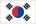
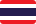
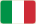

Về dự án
Quy trình thiết kế trang web chọn món ăn giúp bạn khi không biết ăn gì.
Ý tưởng · Nhóm thực hiện
Ý tưởng: Mỗi bữa ăn, câu hỏi “Hôm nay ăn gì?” luôn tốn nhiều thời gian. Ăn gì đây? giải quyết bằng 2 chế độ: Chọn bất kỳ (món hợp với giờ hiện tại) và Chọn theo ẩm thực (Việt, Nhật, Hàn, Trung, Thái, Ý hoặc máy quay xèng “Bất ngờ đi!”), tối đa 2 lần bấm từ Trang chủ để có kết quả.
Nhóm thực hiện: Đồ án môn Thiết kế Web Nâng cao · Năm 2026 (6 nền ẩm thực × 6 món = 36 món).
Mood board
Cảm hứng từ quán ăn đường phố ấm cúng, sắc màu gia vị và máy quay xèng vui nhộn.
Wireframe
Thiết kế đáp ứng: < 640px (1 cột) · 640–1023px (2 cột) · ≥ 1024px (3–4 cột, tối đa 1120px).
Màu sắc
Tỷ lệ 60% nền kem · 30% thẻ trắng · 10% màu nhấn. Đạt chuẩn tương phản WCAG AA (≥ 4.5).
- Cam #C2410C
- Việt #B02A5B
- Nhật #2C4A7C

Hàn #B3261E- Trung #9A5B00

Thái #6A3D9A
Ý #2E7D4F
Font chữ
Kết hợp serif ấm áp cho tiêu đề và sans-serif rõ ràng cho nội dung tiếng Việt.
Hôm nay ăn Phở bò hay Bún chả?
Nước dùng ninh xương thơm quế hồi, bánh phở mềm, rau thơm tươi.
Nguồn ảnh
Nguồn ảnh: Unsplash (ghi tên tác giả trong trường credit tại js/data.js khi chèn ảnh món ăn vào thư mục images/dishes/ và images/cuisines/) · Biểu tượng minh hoạ & cờ quốc gia: SVG tự thiết kế tại images/flags/.